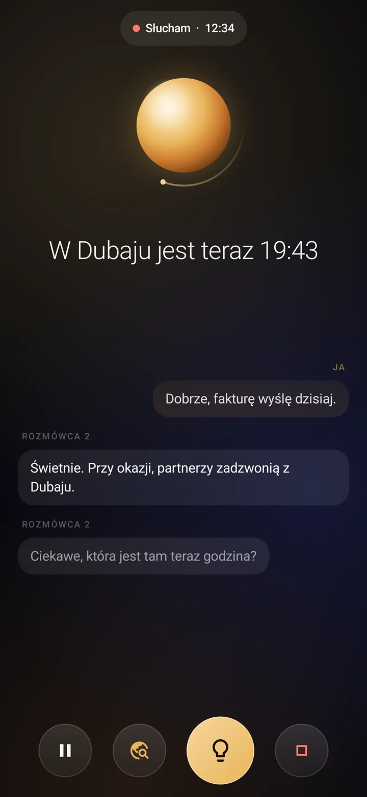
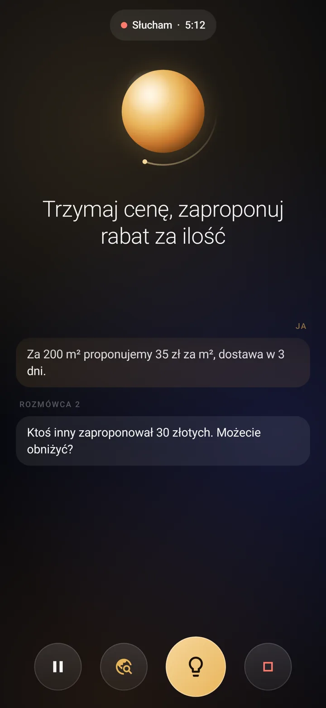
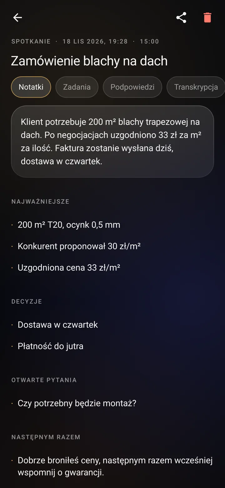

Asystent rozmów na żywo
Drugi umysłw twoim uchu.
Enkirai słucha spotkania, rozmowy lub negocjacji i w ~1,7 sekundy szepcze odpowiedź do słuchawki. Po rozmowie notatki i zadania są gotowe.
Wkrótce w Google Play
Odpowiedź w uchu, zanim pauza zrobi się niezręczna.
Enkirai słyszy pytanie, decyduje, czy warto pomóc, i szepcze kilka słów do słuchawki. Około 1,7 sekundy od początku do końca.

Co Enkirai robi za ciebie

Spotkanie się skończyło. Notatki są gotowe.
Podsumowanie, decyzje, otwarte pytania i zadania z osobami i terminami, około dziesięciu sekund po zakończeniu. Jednym stuknięciem kopiujesz wszystko.

5 języków
Litewski, angielski, polski, łotewski i estoński, nawet gdy mieszają się w jednej rozmowie.
Prywatność od podstaw
Transkrypcje zostają na twoim telefonie. Bez reklam, bez sprzedaży danych. Powiedz rozmówcom, że robisz notatki z AI.
Usłysz to pierwszy.
Zapisz się na listę oczekujących. Testerzy dostają wcześniejszy dostęp i rok za darmo.
Wkrótce w Google Play